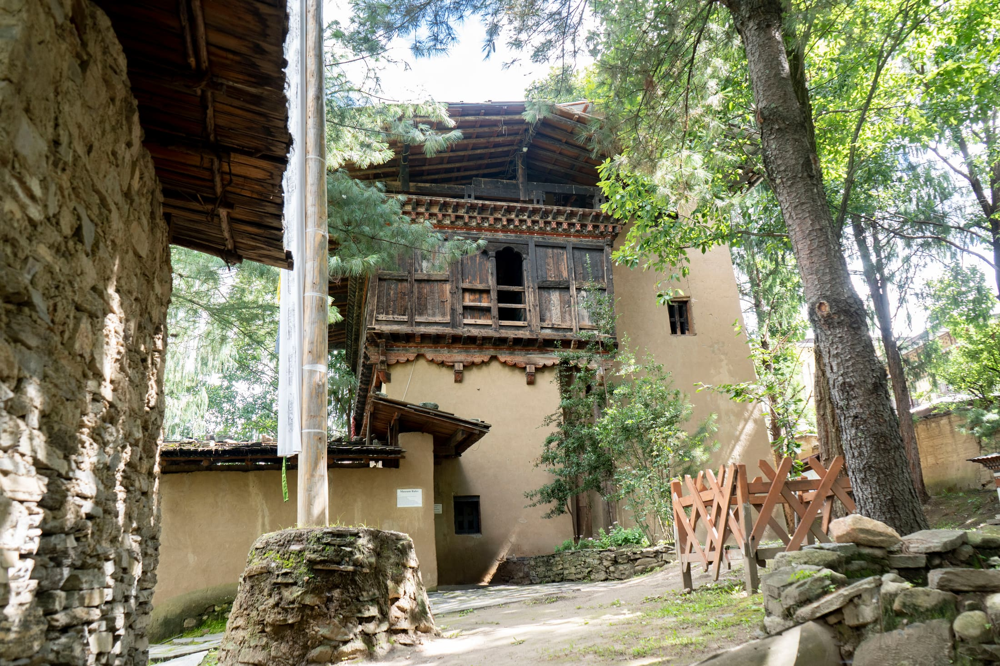
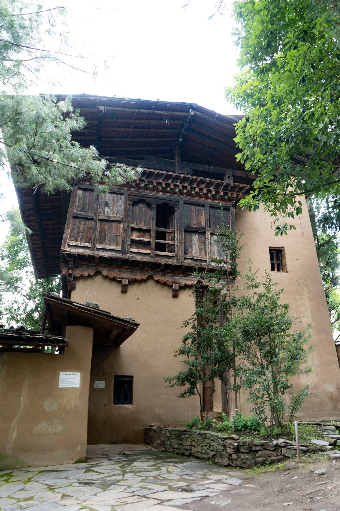

The Building
Architecture
A restored 18th-century farmhouse in Kawajangsa — the walls, timber and roofline are the oldest object in the collection.

Origins — Mid-18th Century
The Manor of Wang Valley.
The heart of the Museum is the Manor of Wang Valley, a restored three-storeyed traditional rammed-earth and timber house dating back to the mid-18th century, historically associated with the Kawang family. Its design and form are those of an average household in the Wang — present-day Thimphu — area during that era.
The structure demonstrates a deep understanding of climate, sustainability, and traditional Bhutanese architecture — a house still standing on its original foundations, more than two centuries on.
"We restored the building the way a conservator treats a textile — repair what has failed, and leave everything else exactly as time made it."
Restoration Architect
Climate & Craft
Timber
Country
The main features of Bhutanese architecture are a result of natural conditions, and especially the climate. This alpine-type vegetation supports forests rich in oak, rhododendron, cypress, juniper, pine and fir — a plentiful supply of timber that has given birth to an architecture in which wood plays the leading role. Shingle roofs and half-timbering are common, simply because the raw material has always been close at hand.


Materials & Method
Rammed earth, hand-hewn timber, no nails.
The lower walls are rammed earth, compacted in layers between temporary timber formwork — a technique that produces walls dense enough to regulate temperature through Thimphu's winters without insulation. The upper storey is entirely timber-framed, jointed by mortise and peg rather than nailed, so that individual members can be replaced without disturbing the frame around them.
From its sturdy construction to the thoughtful integration of natural materials, the building's architecture tells a story of harmony with nature and a deep understanding of sustainable living — preserving not just a structure, but the wisdom and craftsmanship of Bhutan's rural past.
Construction Details
Built to measure.
Detail
Built for the weather.

The Shingle Roof
Bhutanese roofs are made of pine shingles and laid to a gentle slope. Stones are placed at regular intervals on laths running across the loose shingles — the weight of the stone holds them down, even during the severe windstorms at the end of winter.
The Trefoil Window
The upper part of the window frame ends in a trefoil arch, cut directly from the cross-beam. Sliding wooden shutters close the window at night, protecting the inhabitants against the weather.
Room by Room
Inside the Manor
Four floors, each preserved as it was lived in. Select a room below to step inside.
Entrance
Step into a realm where tradition and craftsmanship are revered and preserved. Enter this cultural enigma, for an unforgettable experience.
Then & Now
A slow restoration.
Decades of exposure had darkened and loosened the original shingle roof and left the ground-floor timber joinery unstable.
Re-set stonework, replaced shingles, and structural timber repairs carried out using the same joinery techniques as the original build.

See it for yourself.
The building is best understood in person — from the courtyard stone to the shingle roof above.
Plan your visit →